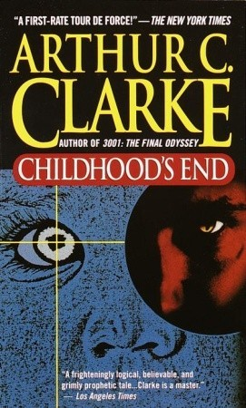
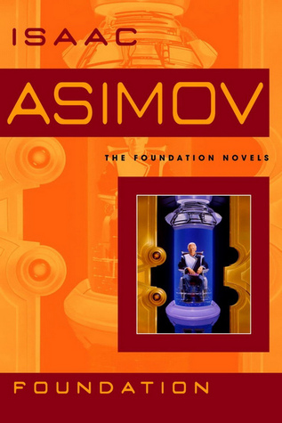
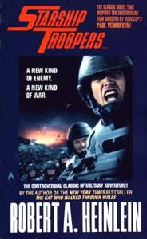
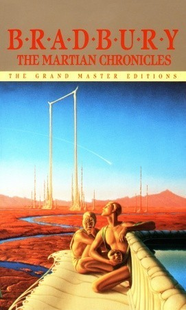
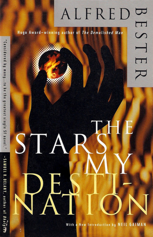

My Science Fiction Challenge
I decided to read 5 sci-fi books per decade between the 1950s and now. This is my list.
Subject to change.
You can find a link to my Goodreads profile here
1950s
-

Childhood's End by Arthur C. Clarke
Review
-

Foundation by Isaac Asimov
-

Starship Troopers by Robert Heinlein
-

The Martian Chronicles by Ray Bradbury
-

The Stars my Destination by Alfred Bester
1960s
- The Moon is a Harsh Mistress by Robert Heinlein
- The Pandora Sequence by Frank Herbert and Bill Ransom
- Solaris by Stanislaw Em
- Nova by Samuel R. Delany
- The Left Hand of Darkness by Ursula K. Le Guin
1970s
- The Dispossessed Ursula K. Le Guin
- Ringworld by Larry Niven
- Nine Princes in Amber by Roger Zelazny
- A Hitchhiker's Guide to the Galaxy by Douglas Adams
- Rendezvous with Rama by Arthur C. Clarke
- HONORABLE MENTION - Kindred by Octavia Butler
1980s
- The Handmaid's Tale by Octavia Butler
- Hyperion Cantos by Dan Simmons
- Startide Rising by David Brin
- Shards of Honor by Lois McMaster Bujold
- Radix by A. A. Attanasio
1990s
- A Fire Upon the Deep by Vernor Vinge
- Red Mars by Kim Stanley Robinson
- Snowcrash by Neal Stephenson
- Vacuum Diagrams by Stephen Baxter
- Starfish by Peter Watts
2000s
- Revelation Space by Alastair Reynolds
- The Dreaming Void by Peter F. Hamilton
To be continued . . .